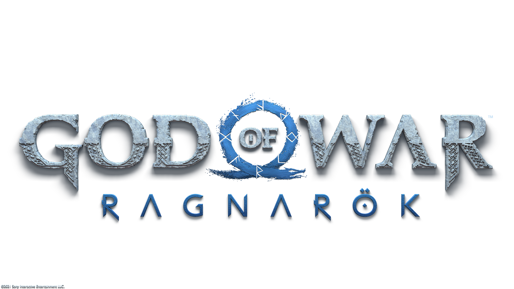

Do Santa Monica Studio, esta é a sequência da aclamada versão de 2018 de God of War. O Fimbulwinter já começou. Kratos e Atreus devem viajar pelos Nove Reinos em busca de respostas enquanto as forças asgardianas se preparam para uma batalha profetizada que causará o fim do mundo. Nessa jornada, eles explorarão paisagens míticas impressionantes e enfrentarão inimigos aterradores: deuses nórdicos e monstros. A ameaça do Ragnarök se aproxima. Kratos e Atreus terão de escolher entre a segurança deles próprios e a dos reinos.